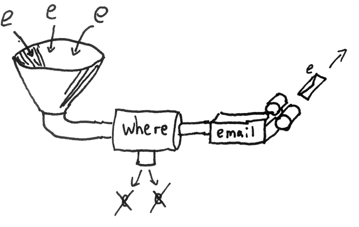
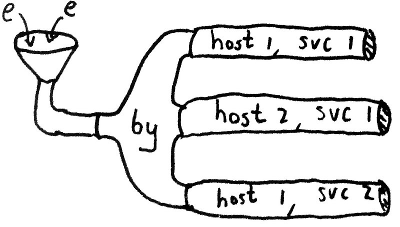
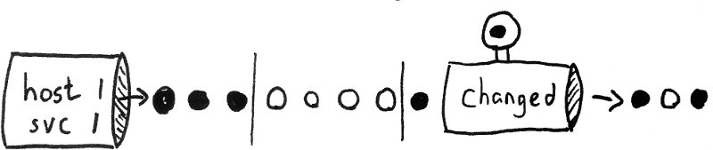
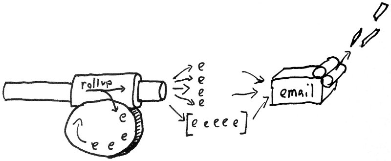

Ivan Chernetsky <ichernetsky@qualys.com>
“Riemann aggregates events from your servers and applications with a powerful stream processing language... Riemann provides low-latency, transient shared state for systems with many moving parts.”
“Clojure is a dynamic programming language that targets the JVM... a general-purpose language... with an efficient and robust infrastructure for multithreaded programming. ... is a dialect of Lisp, and shares with Lisp the code-as-data philosophy and a powerful macro system. ... is a functional programming.”
Events are immutable structs, which are sent to Riemann over Protocol Buffers.
| Field | Description |
|---|---|
| host | a hostname, e.g. "api", "bar.com" |
| service | e.g. "merge reqs/sec" |
| state | any string, e.g. "ok", "warning" |
| time | the time of the event, in UNIX epoch seconds |
| description | any text |
| tags | any list of strings, e.g. ["proxy", "exception"] |
| metric | a number associated with the event |
| ttl | a floating-point time, in seconds, that this event is considered valid for |
“The index is a table of the current state of all services tracked by Riemann. Each event is uniquely indexed by its host and service. The index just keeps track of the most recent event for a given (host, service) pair.”
“Streams live in the (streams ...) section of your config file. You can think of (streams) as the top level stream, the source from which which all events flow.”
(streams
(where (and (service #"^riak")
(state "critical"))
(email "delacroix@vonbraun.com")))
Streams are just functions which take events as arguments. So you can compose them and define your own streams.
We need to detect state transition for each service independently. Let's split the stream:
(by [:host :service])
Let's detect state transitions with changed:
(by [:host :service]
(changed :state))
We need to send no more than 5 email per hour. In a given hour, rollup will allow four events to pass through immediately. Then it aggregates all successive events in a buffer, which is passed on at the end of the hour.
(by [:host :service]
(changed :state
(rollup 5 3600
(email "delacroix@vonbraun.com"))))
# Simple equality
state = "ok"
# Wildcards
(service =~ "disk%") or
(state != "critical" and host =~ "%.trioptimum.com")
# Standard operator precedence applies
metric_f > 2.0 and not host = nil
# Anything with a tag "product"
tagged "product"
# All states
truePrint events to stdout or a log file
(streams
(where (service "bar")
; Print event to stdout
prn
; Print :foo, then the event
#(prn :foo %)
; Log event to the logfile and stdout
#(info %)
; Log event using the same representation as prn
#(info (pr-str %))
; Log some specific fields
#(info (:service %) (:metric %))Filter events
(streams
(where (state "error")
(email "delacroix@vonbraun.com"))
(where (description #"an+elids") ...)
(tagged "page" page-ops)
(tagged-all ["ops" "ddos"] (email "ops@githug.com"))
(where (>= (* metric 1000) 2.5))
(where (not (or (tagged "www")
(and (state "ok") (nil? metric)))))
(where (some (fn [r] (re-find r service)) [#"cassandra disk .+"
#"cassandra net .+"
#"cassandra latency \d+"])
...))Set a threshold
(streams
(where (<= 0 metric 5)
(with :state "ok" index)
(else
(with :state "warning" index))))Measure your app's latency and the number of request per second
(where (service "api req")
(percentiles 5 [0.5 0.95 0.99]
; Percentiles will emit events like
; {:service "api req 0.5" :metric 0.12}
index)
(with {:metric 1 :service "api reqs/sec"}
(rate 5 index)))Report exceptions
(tagged "exception"
(email "ops@foocorp.com"))
(where (tagged "exception")
(with :metric 1
(by :service
(adjust [:service str " exception rate"]
(rate 10 index graph)))))Detect down services
; You can control how often the index scans for expired
; events with periodically-expire
(periodically-expire 10)
(streams
(changed-state {:init "ok"}
(email "ops@qualys.com")))Find the host using the most CPU
(coalesce (smap folds/maximum
(with {:service "max cpu" :host nil} prn)))Count total number of hosts
; All services should be the same
(with :service "distinct hosts"
; Combine hosts and services
; coalesce gets snapshot of the most recent event
; from every host and service that passes through
; that coalesce stream
(coalesce
; Turn lists of events into a single event with
; the count as its metric
(smap folds/count
; Strip host field
(with :host nil
index))))Arbitrary functions as streams
(where (service "foo")
(fn [event]
; Log a message
(info "I got an event:" event)
; Then extract some fields and insert them into a DB.
(save-to-my-database (:description event) (:metric event))))Create your own stream function
(defn hello-stream [& children]
(fn [e] (let [new-event (assoc e :hello :world)]
; call-rescue is a standard library function that passes
; the event on to all the child streams it was passed
(call-rescue new-event children))))
(streams (hello-stream prn))Forward between Riemann servers
(streams
(let [client (tcp-client :host "aggregator")]
(by [:host :service]
(changed :state
(forward client)))))
$ sysctl -w net.core.rmem_max=10485760(require '[cheshire.core :as json])
(def influxdb-host (. java.net.InetAddress getByName "127.0.0.1"))
(def influxdb-port 4444)
(def udp-socket (new java.net.DatagramSocket))
(defn message [text]
(new java.net.DatagramPacket (. text getBytes) (. text length)
influxdb-host influxdb-port))(defn influxdb-udp [event]
(when (:metric event)
(when (:service event)
(let [hostname (if-let [h (:host event)] h "")
d (json/generate-string [{:name (:service event)
:columns ["name" "host"
"state" "value"]
:points [[(:service event)
hostname
(:state event)
(:metric event)]]}])]
(.send udp-socket (message data))))))
/etc/riemann/riemann.configservice riemann restarthttps://github.com/aphyr/riemann-dash
“A JavaScript, WebSockets-powered dashboard for Riemann.”
SCL (Software Collections);yum install ruby193-ruby ruby193-ruby-devel ruby193-rubygems as root;scl enable ruby193 'gem install riemann-client riemann-tools riemann-dash thin' as root;
scl enable ruby193 /opt/rh/ruby193/root/usr/local/bin/riemann-dash from within a directory with config.js with content like:set :server, 'thin'
set :port, 10080
set :bind, '0.0.0.0'
config[:ws_config] = 'config.json'
“An open-source, distributed, time series database with no external dependencies.”
/opt/influxdb/shared/config.toml (optional)./etc/init.d/influxdb start.http://hostname:8083/ and log in with root/root.riemann with user/password user/password.Just make a POST request to /db/<database>/series?u=<user>&p=<pass>
[
{
"name": "sys",
"columns": ["name", "host", "value", "state"],
"points": [
["cpu", "sandbox01", 0.1, "ok"]
]
}
]$ curl -X POST -d '[{"name":"sys","columns":["name","host","value","state"],"points":[["cpu","sandbox01",0.1,"ok"]]}]' 'http://localhost:8086/db/riemann/series?u=user&p=password'
$ echo $?
0Edit /opt/influxdb/shared/config.toml:
[input_plugins]
...
[input_plugins.udp]
enabled = true
port = 4444
database = "riemann"And send JSON objects using UDP datagrams to 4444 port.
InfluxDB can accept data through:
-- list all series in database
list series
-- or this
select * from /.*/ limit 1
-- list points from a particular series
select * from sys limit 3
-- delete some points from that series
delete from sys where time < now() - 1h
-- self-describing
drop series sys
-- using regexp in where clause
select * from log_lines where line =~ /error/i;Of course, it supports:
Group by clauses;Join operations;Aggregation functions.As usual, the details are on http://influxdb.com/docs/v0.8/api/query_language.html
“An open source, feature rich metrics dashboard and graph editor for Graphite, InfluxDB & OpenTSDB.”
cd;config.js based on config.sample.js;nginx or even python -m SimpleHTTPServer 8080.
cd riemann-talkindex.html in a browser